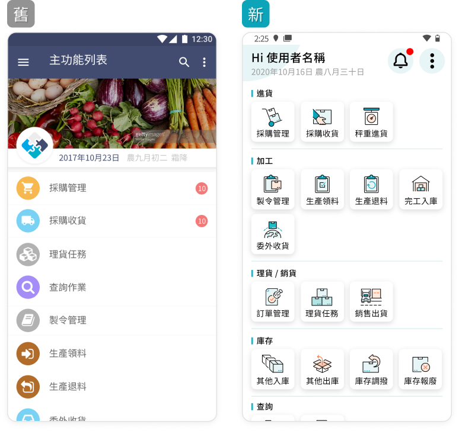

專案介紹
不同於一般管理，農產有複雜包裝規格及生鮮品質差異的溯源需求，而為農產流通加工企業打造的 ERP 系統，團隊有 PM、SA 以及多位開發工程師。初接手時系統已運作二年，我的角色是 UI 設計師及共同 UX 研究，主要工作為後續 WEB 新功能開發、APP 第二代改版和形象規劃。
因持續的開發新功能，原版型不適合擴充延伸，但已經有客戶在使用此系統，而在使用者不需重新大量學習操作方式的前提下，做改版並優化部分操作流程。
改版範例

原本的首頁可以容納的功能選項較少，若繼續延伸開發必須要滑動很久才能找到下面的項目。
優化內容呈現，將資訊層級清楚分類，並將使用著所要知道的重要資訊在第一眼即可獲得。
考量現場實務會有包裝人員在場內邊包裝一邊使用紀錄，以及在蔬果市場邊走邊操作時的情境，而在系統設定為大字體或是資料內容很多時版面依然可正常顯示。
新功能開發範例
蒐集客戶需求，了解操作情境之後，將流程初步規劃，透過來回的討論確認可執行後，再繪製成設計稿。

此新功能依據 APP 已有的操作模式做延伸開發，因此直接利用已完成的元件做流程規劃，不需要創造新的操作風格，也能提升開發速度。
設計原型
新版的介面配合形象風格與顏色，統一整體的視覺，藍色與白色的組合帶給人明亮有朝氣的氣氛，並將使用元件整合，可以清楚知道所有狀態上的運用。
學習與思考
當開發的時間拉長，同時手上有多個案子進行時，若新功能距離前一次開發時間間隔太久，有時候會忘記原本的設計思考，如果沒有流程操作的規範或共用元件，可能會在下一次的設計時不小心發展出新的樣貌，學習到設計文件的重要性。